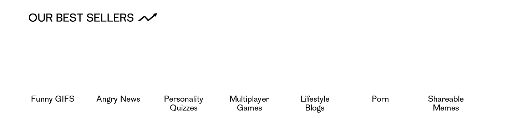
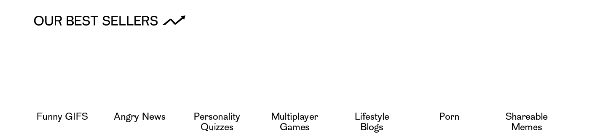
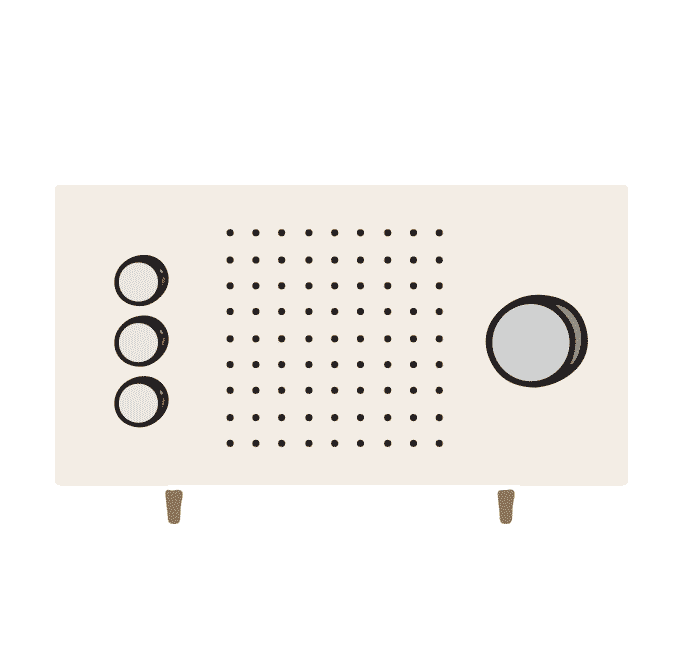
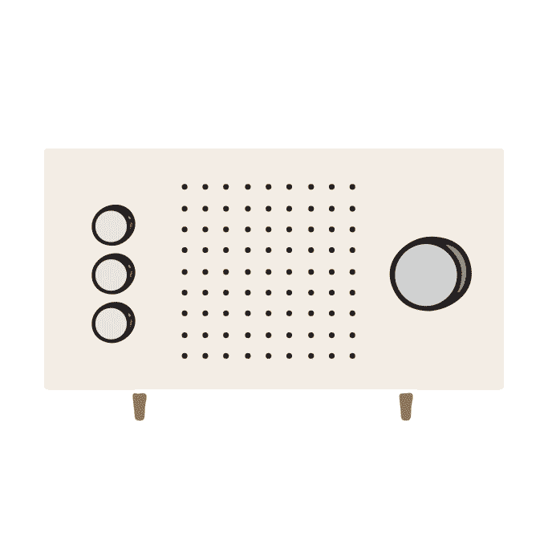
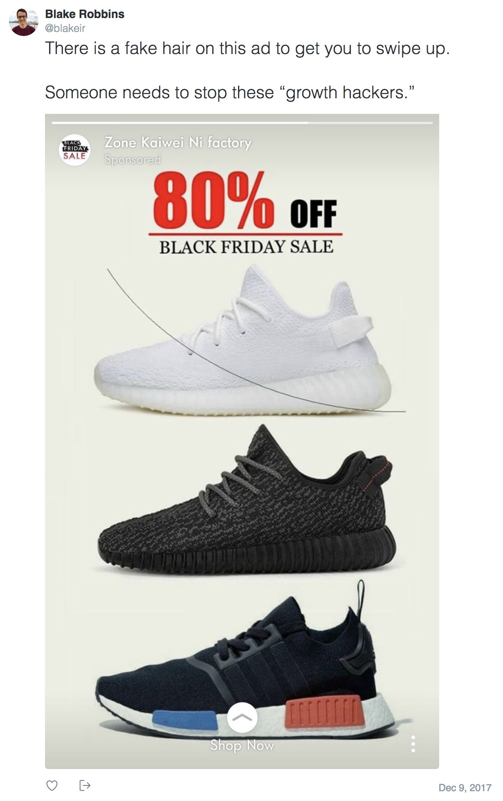
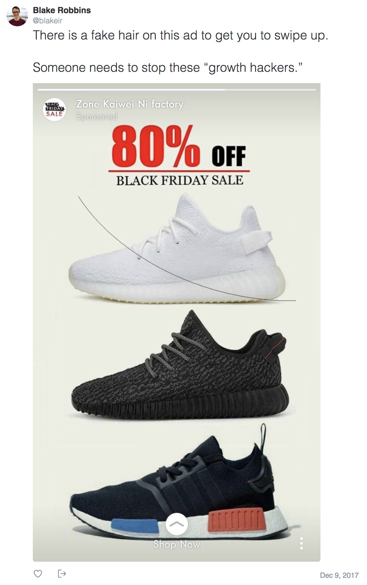

• Welcome!
Thanks for spending your attention here. Feel free to shop around! Just make sure to check out when you've finished ;)
Source: Loop'n'Mix
end
end
end
end
 


 

.
8:15 am | Today
When radio broadcasting became popular in early 20th century, it was common to listen around a table or fireplace with the family. Public programs played jazz music, recounted sports scores and reported the news, and no marketing messages violated the intimacy of the family home.
The publicity manager for Westinghouse Co., J.C. McQuiston, believed that the public would not stand for any advertising coming from their precious new devices: “You may say you can turn it on at will and turn it off when you want to, but even so, who will want it?” he wrote in the August 1922 edition of Radio News. “Advertising must ride on some service, and in riding on that service it must not destroy the service… the medium for advertising must play second fiddle to the editorial and written pages.”
While McQuiston’s ethics were strong, his prediction was wrong. By 1947, Nielsen radio ratings had determined a way to gather a seeming trove of data on listeners’ habits and preferences, laying the foundations for an emerging industry: radio advertising.
With the ratings, advertisers were able to specifically target groups of people based on their content-consumption habits (sound familiar?). Content producers were making a fortune, and soon altered their formats to better accommodate their new masters. Amos ‘n’ Andy, a popular radio sitcom, altered its weekly single-sponsor format to become a 30-minute daily program dotted with multiple advertisements throughout. The show became full of even more cliffhangers, gripping plot questions left dangling until after the commercial break.
Fast forward to the 1950s and we see how television employed similar techniques. Game shows like The $64,000 Question (and later, reality shows like The Real World) used pre-break cliffhangers to buy the same rapt consumer attention at a discount in order to resell it to desperate advertisers for a premium.
An extra tactic of these shows, too, was their ability to turn any regular Joe into a short-term celebrity. Paying its actors in attention was an extremely effective cost-cutting measure for the show, and it had the added bonus of inspiring aspirations of similar fame in its viewers’ minds.
This appeal to ego would find its footing with the rise in popularity of AOL email in the early 1990s. People were desperate to sit through their dial tones to receive the dopamine-inducing “You’ve Got Mail!” — and by the late 1990s, those millions of expectant eyes on screen were purchased in bulk by admen.
For it was the same game we’ve been playing since Benjamin Day’s New York Daily Sun waged a bet by bringing previously elite newspapers to the pedestrian level. Drive circulation with unmissable, salacious (and sometimes fake) content, and offset production costs by reselling readers’ attention to advertisers.
 Lithograph of the moon as described by journalist Richard Adams Locke in a series of New York Daily Sun articles that ran beginning August 1835. The features claimed to be reporting on evidence from famous contemporary astronomer Sir John Herschel. This fake news drove circulation statistics to record levels, confirming Sun editor Benjamin Day’s business proposition that content should be little more than a conduit for advertising. Source: Wikimedia Commons.
Lithograph of the moon as described by journalist Richard Adams Locke in a series of New York Daily Sun articles that ran beginning August 1835. The features claimed to be reporting on evidence from famous contemporary astronomer Sir John Herschel. This fake news drove circulation statistics to record levels, confirming Sun editor Benjamin Day’s business proposition that content should be little more than a conduit for advertising. Source: Wikimedia Commons.
And it’s the same game we’re playing now. Modern media moguls have coupled the allure of salacious content with the personalisation of email to bring us our most addicting advertising vehicle yet: social media.
With psychologically grounded techniques like infinite scrolling and personalised, intermittent variable rewards (notifications), we are induced to continue staring at ours screens and nonchalantly sharing information about ourselves that is fed through a maze of ad placement middlemen (and middlebots) to make a lot of money for a lot of other people.
The question is: is it the same game we will be playing in the future? Is there a future for media that serves the public, or will our precious new tech soon become overrun?
.
7:45 am | Today
It’s a safe bet that every internet user has at some point encountered – and fallen prey to – the dark art of online advertising.
There are the classic players who promote their product with a flashy banner ad or annoying pop-up, but these traditionalists are no match for the truly sinister.
The advertisers trafficking in “dark patterns” use visual cues to confuse users into repeatedly reading their message:
And place visual importance on the option they’d like you to choose:
They make “unsubscribe” nearly (or literally) impossible to find:
And engage in “Confirmshaming”:
"No thanks, I don't want to understand my dog."
The most nefarious place a speck of dirt or a thin hair in their message, baiting users to swipe away the speck – and inadvertently click on the advert:
 

But it goes deeper than hard-to-find links and passive-aggressive options. Often the backend is also designed to make you anxious:
These ads may be ugly, but they’re not badly designed. In fact, they’re proof of highly effective problem-solving on the part of the designers. That is, if their problem is that not enough people are clicking on the client’s ads.
And unfortunately, click-through rates matter. But Harry Brignull, founder of the Dark Patterns “Hall of Shame” (where the photos above were sourced from), says the first step to combating them is simply to complain. Because the best way to eradicate them is to name them and shame them.
Oh, and stop falling for them.
.
 5:45 am | Today
5:45 am | Today
By the looks of it, Lil Miquela is just like any other trendy AF Instagram influencer. She wears Supreme and Vans, listens to Cardi B and receives free perks from brands. She’s not afraid to share her views (“#DefendDACA”), and she lets everyone know what she’s into at the moment (“110% obsessed with @fuckupayus, an all black-femme punk band based in LA”). Oh, and she’s also a singer on Spotify.
But for those who had doubts about her too-perfect skin, their suspicions were confirmed in a recent text post:
But not being human doesn’t prohibit Lil Miquela from accepting donations to her favourite charity, blackgirlscode, and it doesn’t stop her from doing interviews and taking on modelling gigs with Novembre, Interview and V Magazine. She gets free stuff from her brands, and definitely makes money through her releases on Spotify and iTunes.
How many influential Instagram robots are there out there in the world? We at least know of two others — Ronnie Blawko, a very cool male robot, and Bermuda, a female, pro-Trump climate change denier who hacked Lil Miquela’s account in May and pushed her to out herself as non-human.
The best theories behind this drama trace all three of these techno-people back to a company called Cain Intelligence, who claim to be "leaders in machine learning and artificial intelligence.” Maybe it’s just a graphic designer hungry for attention, mused Beatrice Hazlehurst in an article for Paper Magazine. Or maybe it’s the work of marketing geniuses who are “constructing a spectacular scam to bring attention to both the pages of Lil Miquela and Bermuda, all the while analyzing how we react online to racially ambiguous, beautiful, stylish, 'Black Lives Matter' supporter versus a pro-gun, Tomi Lahren-loving, Aryan Republican.”
.
2:45 am | Today
If you went to UAL: Central Saint Martins, you probably didn’t bat an eye when you saw any of these sights on the daily (expertly captured by @thats_so_CSM):
1. Random mannequins making their appearances in strange places:
2. Self expression anywhere and everywhere:
3. Misery in Magenta:
4. Existential crises as the demand for handmade IKEA backpacks skyrockets:
But you were rightly very confused to see this oddly dressed specimen
in the halls:
Honestly, what was he even doing here?
.
11:59 pm | Yesterday
Ever told yourself you’d get up and start your day at 7am, only to find you’re still in bed, scrolling through social media, at 8:30? You’re not alone, and it’s not (completely) your fault.
In The Principles of Psychology, written far before the time of the iPhone, psychologist Williams James empowers us with agency over our attention. "Without selective interest, experience is an utter chaos. Interest alone gives accent and emphasis, light and shade, background and foreground intelligible perspective," he wrote. "My experience is what I agree to attend to."
In today’s attention economy, this agreement does not feel mutual. Pervasive, persuasive techniques like autoplays and time-varied notifications play on our psychological vulnerabilities. "Related articles" at the bottom of online articles, links embedded within articles, and popups that are triggered by a mouse moving toward the "exit" button are all examples of design choices that play on human biases in order to capture additional moments of attention.
Infinite scrolling
This technique takes clever advantage of a psychological phenomenon demonstrated by Cornell professor Brian Wansink in his 2005 "Bottomless Bowl" study. In the study, researchers found that people consumed 75 percent more soup when it was automatically refilled, without reporting any greater feelings of satisfaction. This type of psychologically grounded manipulation is utilised by most popular social media applications.
Notifications
Like slot machines, our smartphone apps keep us hooked by using random and unpredictable rewards every time we pull to refresh on email, tap the notification icon on Facebook, or simply open our phone to see what messages we’ve missed. These variable rewards produce more of the neurotransmitter dopamine than regular rewards.
Choice architecture
If constructed strategically, limiting our available menu options also keeps us on screen. Research shows that if people are given too many options, they will end up regretting their choices. So to facilitate quick and satisfactory decision-making, designers limit menu options to an optimal number. Tinder, for example, presents a number of suitable suitors, some hot, some not-so-hot, but the catch is that the list is never exhaustive. The limiting of choice is a viable antidote to option overload, but creates an illusion of agency for the user.
So next time you’re stuck in bed an hour and a half after you planned to be, you can take comfort in the realisation that a lot of hard work and scientific research has gone into keeping you there.
But don’t get too comfy. After all, your experience is what you attend to.
.
9:45 pm | Yesterday
When Cambridge Analytica and holding group SCL Elections Ltd. announced their plans to close in early May, they released a statement that blamed the “siege of media coverage” for their sudden demise.
“Cambridge Analytica has been the subject of numerous unfounded accusations,” the press release stated. It claimed the data-driven marketing company had been “vilified for activities that are not only legal, but also widely accepted as a standard component of online advertising in both the political and commercial arenas.”
While the thrust of the accusation against them — that they were using illegally obtained personal data to influence voters, was very well founded, the statement makes a point in calling out the media companies that vilified them for engaging in the exact same kind of game that Cambridge Analytica was playing: using data to determine users’ drivers and desires in order to market to them.
“Any of these media outlets could have been talking about the company for which they worked,” said Julian Malins, a member of the Queen’s Council who co-authored an investigative report with Linda Hudson, which denied most accusations and claimed SCL no longer had access to the data illegally obtained by Cambridge University researcher Alexsandr Kogan.
“Others say companies have little moral standing to criticise Facebook’s practices, when they have themselves relied on the social network to acquire customers, using the same ad-targeting tools that rely on personal data that have stirred up so much controversy in the context of politics,” writes Nick Wingfield for The New York Times (which also runs targeted ads, even for paying customers).
The more we share, the more we can be understood and profiled as consumers. At first, this targeted, “optimised” advertising was generally welcomed. When it was being used to sell us shoes, we said, oh that’s just strategic. It’s a little annoying, maybe even a little creepy, but it’s not fundamentally harmful. After all, I have the free will to choose whether to purchase those shoes.
It seems we only sounded the alarm bells when this highly targeted advertising was being used for something political — something political that many people didn’t agree with. But what would have happened if Christopher Wylie was not the pink-haired, pro-LGBT liberal that he is? Would a data breach like that of Aleksandr Kogan’s ever be known outside of Steve Bannon’s inner circles?
When we wait for whistleblowers, our approach is necessarily reactive. We want to regulate Facebook, fine it, watch Zuckerberg squirm in a starchy suit while testifying. But this kind of gratifying revenge, those images of Zuckerberg’s bruised face are, ironically, clickbait. Incendiary imagery intended to drive eyes to websites that are supported by advertising.
Under the guise of research, Kogan effectively stole user data, selling it to CA, who used it to create psychographic profiles of users and devise persuasive and personalised political messaging strategies. Because this data was obtained illegally, prosecutors have been able to vilify CA for its actions. But the legal actions that most online media companies take every day are going unchecked — which might be far more sinister.
 Top
Top